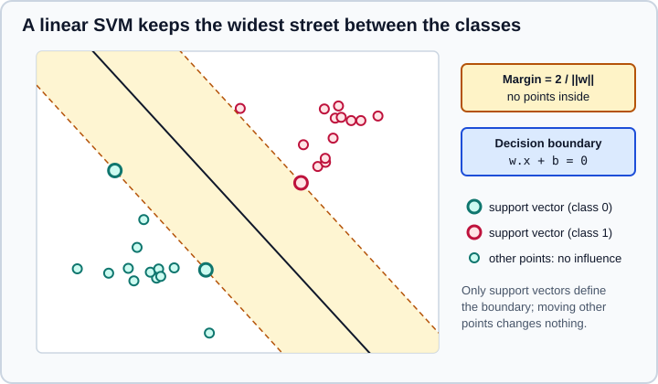

Support Vector Machines in scikit-learn
|
This content was generated with the assistance of AI and should be verified against the official documentation before being relied on in production. |
A support vector machine (SVM) separates classes with the boundary that leaves the widest possible margin, and a kernel
lets that boundary be curved. It is one of the strongest methods for small and medium datasets with many features, and
scikit-learn offers it for classification, regression and novelty detection in the sklearn.svm module. This page
covers the estimators and their options, the role of C, gamma and epsilon, the kernels, why scaling is mandatory,
how to get probabilities now that SVC(probability=True) is deprecated, class weights, precomputed and custom kernels,
and what to do when the data is too large. It targets scikit-learn 1.9 (1.9.1) with NumPy 2.5 and
pandas 3.1, and was checked in October 2026; every example was run with Python 3.13 and scikit-learn 1.9.1, and the
printed output is the real output. Examples target Python 3.13 or 3.14 and were run on Python 3.13. The vocabulary is explained in the
Glossary of Key Terms, and where SVMs sit among the alternatives in
Choosing the Right Estimator.
The estimators
| Estimator | Implementation and loss | Use it for |
|---|---|---|
|
libsvm; hinge loss; kernels; multiclass by one-vs-one |
Classification up to tens of thousands of samples. |
|
libsvm; same model, |
Classification when an interpretable bound on the fraction of support vectors and margin errors is wanted. |
|
liblinear; squared hinge loss by default; linear only; multiclass by one-vs-rest |
Classification with many samples or many sparse features. |
|
libsvm; epsilon-insensitive loss |
Regression on small and medium data. |
|
liblinear; linear only |
Regression on large data. |
|
libsvm; one class |
Novelty detection. |
|
Stochastic gradient descent; linear in the feature space |
Novelty detection on large data, often after |
All of them inherit the usual conventions: fit, predict, score, fitted attributes ending in an underscore
(support_vectors_, dual_coef_, intercept_, coef_ for linear kernels).
The idea: maximum margin and support vectors
For two classes the SVM looks for the hyperplane \(w^\top x + b = 0\) that separates them with the largest margin, the
distance \(2 / \lVert w \rVert\) between the two parallel hyperplanes \(w^\top x + b = \pm 1\) that touch the closest
points. Those closest points are the support vectors. Only they determine the boundary; moving or removing any other
point outside the margin changes nothing, which is why the fitted model stores them (support_vectors_, their indices in
support_, their counts per class in n_support_) and why prediction only needs them.

Real data is rarely separable, so the soft-margin formulation allows violations \(\zeta_i\) and charges for them:
\[\min_{w,b,\zeta} \; \frac{ 1 }{ 2 } w^\top w + C \sum_{i=1}^{ n } \zeta_i \quad \text{subject to} \quad y_i (w^\top \phi(x_i) + b) \ge 1 - \zeta_i, \; \zeta_i \ge 0\]
C is the price of a violation: a large C punishes every misclassified or inside-the-margin point and gives a narrow
margin that follows the training data closely, a small C accepts more violations for a wider margin and a smoother
model. The map \(\phi\) is never computed; the kernel \(K(x, x') = \phi(x)^\top \phi(x')\) is used instead.
Kernels and their parameters
kernel |
Formula | Parameters |
|---|---|---|
|
\(\langle x, x' \rangle\) |
none |
|
\((\gamma \langle x, x' \rangle + r)^d\) |
|
|
\(\exp(-\gamma \lVert x - x' \rVert^2)\) |
|
|
\(\tanh(\gamma \langle x, x' \rangle + r)\) |
|
|
Your own kernel matrix or function |
see below |
gamma is the reach of a single training point in the RBF kernel: a small value means a large reach and a nearly linear,
smooth boundary, a large value means points only influence their immediate neighbours and the model can memorise the
training set. With gamma="scale" (the default since 0.22) it is \(1 / (\text{ n_features } \cdot \text{X.var()})\), which
adapts to the spread of the data, and gamma="auto" is \(1 / \text{ n_features }\). The first example compares kernels on
the two-moons dataset, and then sweeps C and gamma for the RBF kernel. Look at the training and test columns and at the
number of support vectors:
-
C=0.01is so strong a penalty that the model predicts one class for everything (accuracy about 0.5), whatevergamma. -
With
C=1, a very largegamma=100reaches 0.98 on the training data but only 0.93 on the test data: overfitting, and 203 of 225 training points become support vectors. -
The sigmoid kernel is a poor default; it is not even positive semi-definite for all parameters.
-
The best test score belongs to the RBF kernel with moderate
gamma(about 0.97), with few support vectors.
import pandas as pd
from sklearn.datasets import make_moons
from sklearn.model_selection import train_test_split
from sklearn.svm import SVC
X, y = make_moons(n_samples=300, noise=0.25, random_state=0)
X_train, X_test, y_train, y_test = train_test_split(X, y, stratify=y, random_state=0)
rows = []
for kernel in ["linear", "poly", "rbf", "sigmoid"]:
model = SVC(kernel=kernel).fit(X_train, y_train)
rows.append((kernel, model.score(X_train, y_train), model.score(X_test, y_test), int(model.n_support_.sum())))
print(pd.DataFrame(rows, columns=["kernel", "train", "test", "support vectors"]).round(3).to_string(index=False))
print()
rows = []
for C in [0.01, 1, 100]:
for gamma in [0.1, 1, 100]:
model = SVC(C=C, gamma=gamma).fit(X_train, y_train)
rows.append((C, gamma, model.score(X_train, y_train), model.score(X_test, y_test), int(model.n_support_.sum())))
print(pd.DataFrame(rows, columns=["C", "gamma", "train", "test", "support vectors"]).round(3).to_string(index=False))Output with scikit-learn 1.9.1:
kernel train test support vectors
linear 0.844 0.813 82
poly 0.876 0.853 99
rbf 0.951 0.973 67
sigmoid 0.676 0.640 92
C gamma train test support vectors
0.01 0.1 0.502 0.493 224
0.01 1.0 0.502 0.493 224
0.01 100.0 0.502 0.493 225
1.00 0.1 0.844 0.813 98
1.00 1.0 0.956 0.973 64
1.00 100.0 0.982 0.933 203
100.00 0.1 0.933 0.960 65
100.00 1.0 0.960 0.973 34
100.00 100.0 1.000 0.920 197Source: Kernel functions and SVM classification.
A fitted model exposes what it learned. The second example shows the attributes, the gamma="scale" value, and the two
shapes of decision_function for a multiclass problem. SVC always trains one-vs-one classifiers (one per pair of
classes), but decision_function_shape="ovr" (the default) converts the scores to one column per class so they look like
other classifiers; "ovo" returns one column per pair. dual_coef_ has the shape (n_classes - 1, n_support_vectors) and
holds the coefficients of the support vectors in each of the one-vs-one models. With more than two classes predict can
return the first of several tied classes; break_ties=True resolves ties with the confidence values at some cost.
from sklearn.datasets import load_iris, make_blobs, make_moons
from sklearn.svm import SVC
X, y = make_moons(n_samples=300, noise=0.25, random_state=0)
model = SVC().fit(X, y)
print("gamma='scale' is", round(1 / (X.shape[1] * X.var()), 4))
print("support_vectors_:", model.support_vectors_.shape, "n_support_:", model.n_support_)
print("dual_coef_:", model.dual_coef_.shape, "intercept_:", model.intercept_.round(3))
print("support_ (indices into X):", model.support_[:5])
print("decision_function:", model.decision_function(X[:3]).round(3), "predict:", model.predict(X[:3]))
# multiclass: one-vs-one training, but decision_function_shape controls what you see
X4, y4 = make_blobs(n_samples=200, centers=4, random_state=0)
for shape in ["ovr", "ovo"]:
scores = SVC(decision_function_shape=shape).fit(X4, y4).decision_function(X4[:2])
print(f"decision_function_shape={shape!r}: {scores.shape}")
Xi, yi = load_iris(return_X_y=True)
print("iris dual_coef_:", SVC().fit(Xi, yi).dual_coef_.shape, "(n_classes - 1, n_support_vectors)")Output with scikit-learn 1.9.1:
gamma='scale' is 0.8626
support_vectors_: (76, 2) n_support_: [38 38]
dual_coef_: (1, 76) intercept_: [-0.061]
support_ (indices into X): [14 32 39 44 48]
decision_function: [ 1.407 2.001 -2.01 ] predict: [1 1 0]
decision_function_shape='ovr': (2, 4)
decision_function_shape='ovo': (2, 6)
iris dual_coef_: (2, 60) (n_classes - 1, n_support_vectors)Source: Multi-class classification and sklearn.svm.SVC.
Scaling is mandatory
SVMs are not scale invariant: the RBF and polynomial kernels use distances and dot products, so a feature measured in
thousands dominates one measured in fractions. The official guide says plainly to scale the data. Put a StandardScaler
in a Pipeline so the scaler is fitted on each training fold only. The example below also searches C and gamma on a
logarithmic grid with GridSearchCV, using the pipeline step name as prefix (svc__C, svc__gamma). Scaling lifts the
test accuracy from 0.916 to 0.958 here, and the search finds a large C with a small gamma, a typical combination.
import numpy as np
from sklearn.datasets import load_breast_cancer
from sklearn.model_selection import GridSearchCV, StratifiedKFold, train_test_split
from sklearn.pipeline import make_pipeline
from sklearn.preprocessing import StandardScaler
from sklearn.svm import SVC
X, y = load_breast_cancer(return_X_y=True)
X_train, X_test, y_train, y_test = train_test_split(X, y, stratify=y, random_state=0)
print("unscaled:", round(SVC().fit(X_train, y_train).score(X_test, y_test), 3))
pipe = make_pipeline(StandardScaler(), SVC())
print("scaled: ", round(pipe.fit(X_train, y_train).score(X_test, y_test), 3))
grid = {"svc__C": np.logspace(-2, 3, 6), "svc__gamma": np.logspace(-4, 0, 5)}
cv = StratifiedKFold(n_splits=5, shuffle=True, random_state=0)
search = GridSearchCV(pipe, grid, cv=cv).fit(X_train, y_train)
best = {name: float(value) for name, value in search.best_params_.items()}
print("best:", best, "cv accuracy:", round(search.best_score_, 3), "test accuracy:", round(search.score(X_test, y_test), 3))Output with scikit-learn 1.9.1:
unscaled: 0.916
scaled: 0.958
best: {'svc__C': 100.0, 'svc__gamma': 0.001} cv accuracy: 0.986 test accuracy: 0.958Practical advice for the search: use a logarithmic grid for C (for example \(10^{-2}\) to \(10^{ 3 }\)) and gamma
(\(10^{-4}\) to \(1\)), start coarse, and refine around the best cell. Large C values with large gamma are the slowest
to fit. See Grid, Randomized and Halving Search.
Probabilities: SVC(probability=True) is deprecated
An SVM produces a signed distance to the boundary (decision_function), not a probability, and SVC has no
predict_proba by default. The probability=True option fitted an extra sigmoid with an internal five-fold cross
validation, which slowed fit down and could disagree with predict. It is deprecated in 1.9 and will be removed in
1.11; the replacement is calibration with CalibratedClassifierCV(SVC(), ensemble=False). The example shows the new
route (calibrating a scaled pipeline), the resulting probabilities and log loss, and the FutureWarning of the old
spelling. Calibration methods ("sigmoid", "isotonic") are covered in
Probability Calibration.
import warnings
from sklearn.calibration import CalibratedClassifierCV
from sklearn.datasets import load_breast_cancer
from sklearn.metrics import log_loss
from sklearn.model_selection import train_test_split
from sklearn.pipeline import make_pipeline
from sklearn.preprocessing import StandardScaler
from sklearn.svm import SVC
X, y = load_breast_cancer(return_X_y=True)
X_train, X_test, y_train, y_test = train_test_split(X, y, stratify=y, random_state=0)
svc = make_pipeline(StandardScaler(), SVC()).fit(X_train, y_train)
print("SVC has predict_proba:", hasattr(SVC(), "predict_proba"))
print("margins:", svc.decision_function(X_test[:3]).round(2))
# probabilities: calibrate the decision function
calibrated = CalibratedClassifierCV(make_pipeline(StandardScaler(), SVC()), ensemble=False, cv=5, method="sigmoid")
calibrated.fit(X_train, y_train)
print(calibrated.predict_proba(X_test[:3]).round(3))
print("log loss:", round(log_loss(y_test, calibrated.predict_proba(X_test)), 3))
# the old way still works in 1.9 but warns
with warnings.catch_warnings(record=True) as caught:
warnings.simplefilter("always")
SVC(probability=True).fit(X_train, y_train)
print(caught[0].category.__name__ + ":", caught[0].message)Output with scikit-learn 1.9.1:
SVC has predict_proba: False
margins: [ 1.45 -2.36 -2.11]
[[0.003 0.997]
[1. 0. ]
[1. 0. ]]
log loss: 0.112
FutureWarning: The `probability` parameter was deprecated in 1.9 and will be removed in version 1.11. Use `CalibratedClassifierCV(SVC(), ensemble=False)` instead of `SVC(probability=True)`Source: Scores and probabilities and Probability calibration.
If you only need to rank samples or to pick a threshold, decision_function is enough; thresholding it is explained in
Tuning the Decision Threshold.
Unbalanced problems: class weights
class_weight multiplies C for each class, so errors on the rare class cost more. "balanced" sets the weights
inversely proportional to class frequencies; a dictionary sets them by hand. sample_weight in fit does the same per
sample. In the example the positive class is 5% of the data. Without weights the SVM almost never predicts it (recall
0.216 with perfect precision, a balanced accuracy of 0.61); "balanced" finds most of the rare class (recall 0.865) at
the price of many false alarms (precision 0.311); the manual weight 5 is in between. Choose by the cost of each error.
from sklearn.datasets import make_classification
from sklearn.metrics import balanced_accuracy_score, precision_score, recall_score
from sklearn.model_selection import train_test_split
from sklearn.pipeline import make_pipeline
from sklearn.preprocessing import StandardScaler
from sklearn.svm import SVC
X, y = make_classification(n_samples=3000, n_features=5, n_informative=3, n_redundant=0, weights=[0.95],
flip_y=0, class_sep=0.5, random_state=2)
X_train, X_test, y_train, y_test = train_test_split(X, y, stratify=y, random_state=0)
for class_weight in [None, "balanced", {0: 1, 1: 5}]:
model = make_pipeline(StandardScaler(), SVC(class_weight=class_weight)).fit(X_train, y_train)
pred = model.predict(X_test)
print(f"class_weight={class_weight!s:14s} balanced accuracy={balanced_accuracy_score(y_test, pred):.3f} "
f"recall={recall_score(y_test, pred):.3f} precision={precision_score(y_test, pred, zero_division=0):.3f}")Output with scikit-learn 1.9.1:
class_weight=None balanced accuracy=0.608 recall=0.216 precision=1.000
class_weight=balanced balanced accuracy=0.883 recall=0.865 precision=0.311
class_weight={0: 1, 1: 5} balanced accuracy=0.716 recall=0.432 precision=1.000Source: Unbalanced problems.
Linear SVMs for large data
SVC fits in time that grows at least quadratically with the number of samples and, as the documentation puts it,
"may be impractical beyond tens of thousands of samples". Three options for larger data:
-
LinearSVCuses liblinear, scales almost linearly with samples and features and is the first thing to try on text or other high-dimensional sparse data. It differs fromSVC(kernel="linear"): the default loss is the squared hinge, liblinear penalises the intercept too (raiseintercept_scalingto reduce that), and multiclass is one-vs-rest.dualselects the primal or dual solver; the default"auto"chooses by the shape of the data (dual when features outnumber samples).penalty="l1"gives sparse weights. -
SGDClassifierwithloss="hinge"is the same model fitted by stochastic gradient descent, usable withpartial_fit(see Linear Models). -
Kernel approximation.
NystroemorRBFSamplermap the data to an explicit feature space where a linear model approximates the RBF SVM. In the second part of the example, a problem with a nonlinear boundary gives 0.825 withLinearSVCand 0.921 withNystroemfollowed bySGDClassifier.
from sklearn.datasets import load_breast_cancer, make_classification
from sklearn.kernel_approximation import Nystroem
from sklearn.linear_model import SGDClassifier
from sklearn.model_selection import train_test_split
from sklearn.pipeline import make_pipeline
from sklearn.preprocessing import StandardScaler
from sklearn.svm import LinearSVC
X, y = load_breast_cancer(return_X_y=True)
X_train, X_test, y_train, y_test = train_test_split(X, y, stratify=y, random_state=0)
for dual in ["auto", True, False]:
model = make_pipeline(StandardScaler(), LinearSVC(dual=dual, random_state=0)).fit(X_train, y_train)
print(f"LinearSVC dual={dual!s:5s} accuracy={model.score(X_test, y_test):.3f} coef_ shape={model[-1].coef_.shape}")
# a nonlinear problem: a linear SVM is limited, an approximate RBF kernel plus a linear model is not
X, y = make_classification(n_samples=20000, n_features=20, n_informative=10, flip_y=0.02, random_state=1)
X_train, X_test, y_train, y_test = train_test_split(X, y, random_state=0)
linear = make_pipeline(StandardScaler(), LinearSVC()).fit(X_train, y_train)
approx = make_pipeline(StandardScaler(), Nystroem(gamma=0.05, n_components=300, random_state=0),
SGDClassifier(random_state=0)).fit(X_train, y_train)
print("LinearSVC accuracy:", round(linear.score(X_test, y_test), 3))
print("Nystroem + SGDClassifier accuracy:", round(approx.score(X_test, y_test), 3))Output with scikit-learn 1.9.1:
LinearSVC dual=auto accuracy=0.951 coef_ shape=(1, 30)
LinearSVC dual=True accuracy=0.951 coef_ shape=(1, 30)
LinearSVC dual=False accuracy=0.951 coef_ shape=(1, 30)
LinearSVC accuracy: 0.825
Nystroem + SGDClassifier accuracy: 0.921Source: Complexity and Kernel approximation.
Memory and speed knobs for the libsvm estimators: cache_size (in MB, default 200) is the kernel cache and a larger value
speeds up big problems if RAM allows, shrinking=True enables a heuristic that usually helps, tol and max_iter bound the
optimisation, and a dense float64 C-contiguous array or a float64 CSR matrix avoids an internal copy.
Support vector regression
SVR fits a function that stays within a tube of half-width epsilon around the targets: points inside the tube cost
nothing, points outside pay in proportion to their distance (the epsilon-insensitive loss). Only points on or outside the
tube become support vectors. C trades flatness against tolerance of deviations, epsilon sets the tube, and the kernel
parameters are the same as for classification. NuSVR replaces epsilon with nu; LinearSVR is the liblinear version.
The example sweeps C and epsilon on a linear SVR (a wider tube means fewer support vectors, from 327 down to 205) and
then shows a frequent trap: the target here ranges in the hundreds, so C=1 is tiny and the RBF model underfits (R2
0.14); raising C helps (0.22). Scale the target too if its range is far from one, for example with
TransformedTargetRegressor.
import pandas as pd
from sklearn.datasets import load_diabetes
from sklearn.model_selection import train_test_split
from sklearn.pipeline import make_pipeline
from sklearn.preprocessing import StandardScaler
from sklearn.svm import SVR
X, y = load_diabetes(return_X_y=True)
X_train, X_test, y_train, y_test = train_test_split(X, y, random_state=0)
rows = []
for C in [1, 10, 100]:
for epsilon in [1, 10, 30]:
model = make_pipeline(StandardScaler(), SVR(kernel="linear", C=C, epsilon=epsilon)).fit(X_train, y_train)
rows.append((C, epsilon, model.score(X_test, y_test), len(model[-1].support_)))
print(pd.DataFrame(rows, columns=["C", "epsilon", "test R2", "support vectors"]).round(3).to_string(index=False))
# the target is in the hundreds, so the default C=1 is tiny relative to it
for C in [1, 100]:
model = make_pipeline(StandardScaler(), SVR(C=C)).fit(X_train, y_train)
print(f"rbf SVR C={C:<4d} test R2={model.score(X_test, y_test):.3f}")Output with scikit-learn 1.9.1:
C epsilon test R2 support vectors
1 1 0.361 327
1 10 0.367 288
1 30 0.367 205
10 1 0.347 328
10 10 0.352 286
10 30 0.345 196
100 1 0.336 328
100 10 0.353 293
100 30 0.338 200
rbf SVR C=1 test R2=0.138
rbf SVR C=100 test R2=0.216Source: SVM regression and sklearn.svm.SVR.
Novelty detection with OneClassSVM
OneClassSVM learns the support of a distribution from data assumed to be mostly normal and flags new points that fall
outside it. nu is an upper bound on the fraction of training points treated as outliers and a lower bound on the fraction
of support vectors; predict returns 1 for inliers and -1 for outliers, score_samples and decision_function
give a continuous score. In the example it flags about 5% of the training points (as nu=0.05 asks) and 88% of points
scattered over a much wider area. SGDOneClassSVM fits a linear version by gradient descent in time linear in the
number of samples; combine it with Nystroem to approximate the RBF kernel. Other detectors are in
Outlier and Novelty Detection.
import numpy as np
from sklearn.linear_model import SGDOneClassSVM
from sklearn.pipeline import make_pipeline
from sklearn.preprocessing import StandardScaler
from sklearn.svm import OneClassSVM
rng = np.random.default_rng(0)
normal = rng.normal(size=(500, 2)) # training data: only "normal" points
outliers = rng.uniform(-6, 6, size=(50, 2)) # new points spread over a wide area
detector = make_pipeline(StandardScaler(), OneClassSVM(nu=0.05, gamma="scale")).fit(normal)
print("normal flagged as outliers:", round((detector.predict(normal) == -1).mean(), 3))
print("outliers flagged: ", round((detector.predict(outliers) == -1).mean(), 3))
print("score_samples of two normal points:", detector.score_samples(normal[:2]).round(2))
linear = make_pipeline(StandardScaler(), SGDOneClassSVM(nu=0.05, random_state=0)).fit(normal)
print("SGDOneClassSVM outliers flagged:", round((linear.predict(outliers) == -1).mean(), 3))Output with scikit-learn 1.9.1:
normal flagged as outliers: 0.048
outliers flagged: 0.88
score_samples of two normal points: [3.24 3.22]
SGDOneClassSVM outliers flagged: 0.44Precomputed and custom kernels
When you have a similarity that is not one of the built-in kernels (a string kernel, a graph kernel, a learned
similarity), pass kernel="precomputed" and give the Gram matrix: a square (n_train, n_train) matrix to fit and a
(n_test, n_train) matrix to predict and score. Alternatively pass a function that takes two arrays and returns the
kernel matrix between them. The matrix must be a valid positive semi-definite kernel, otherwise the optimisation may not
converge. The example reproduces the built-in RBF with a precomputed matrix and the linear kernel with a callable; the
scores match.
from sklearn.datasets import make_classification
from sklearn.metrics.pairwise import rbf_kernel
from sklearn.model_selection import train_test_split
from sklearn.preprocessing import StandardScaler
from sklearn.svm import SVC
X, y = make_classification(n_samples=300, random_state=0)
X_train, X_test, y_train, y_test = train_test_split(X, y, random_state=0)
scaler = StandardScaler().fit(X_train)
A, B = scaler.transform(X_train), scaler.transform(X_test)
# precomputed: a square train x train matrix to fit, a test x train matrix to predict
gram_train = rbf_kernel(A, A, gamma=0.05)
gram_test = rbf_kernel(B, A, gamma=0.05)
precomputed = SVC(kernel="precomputed").fit(gram_train, y_train)
print("precomputed accuracy:", round(precomputed.score(gram_test, y_test), 3),
"built-in rbf:", round(SVC(gamma=0.05).fit(A, y_train).score(B, y_test), 3))
def dot_kernel(P, Q):
return P @ Q.T # must return a (len(P), len(Q)) matrix
print("callable kernel accuracy:", round(SVC(kernel=dot_kernel).fit(A, y_train).score(B, y_test), 3),
"linear:", round(SVC(kernel="linear").fit(A, y_train).score(B, y_test), 3))Output with scikit-learn 1.9.1:
precomputed accuracy: 0.96 built-in rbf: 0.96
callable kernel accuracy: 0.92 linear: 0.92Source: Custom kernels.
Choosing between the options
| Situation | Choice |
|---|---|
Fewer than about 10,000 samples, unknown structure |
|
Many features, few samples (text, genomics) |
|
More than 100,000 samples |
|
You need probabilities |
|
Heavily imbalanced classes |
|
Mixed numeric and categorical columns |
Encode and scale in a |
Pitfalls
-
Not scaling. The single most common cause of a poor SVM.
-
Tuning on the test set or without a pipeline. Scale inside the pipeline and search with cross-validation.
-
A huge
gammaorC. Perfect training scores and many support vectors usually mean overfitting. -
Expecting probabilities from
SVC. Use calibration; do not use the deprecatedprobability=True. -
Using the sigmoid kernel as a default. Start with RBF; use linear for high-dimensional sparse data.
-
Fitting
SVCon hundreds of thousands of samples. It will take hours; switch to a linear or approximate method. -
Interpreting
coef_for non-linear kernels. It only exists for the linear kernel; otherwise inspectsupport_vectors_anddual_coef_. -
Passing a 1d
X, or the wrong shape for a precomputed kernel.fitneeds(n_train, n_train),predictneeds(n_test, n_train). -
Leaving the SVM settings of a 2015 tutorial. Defaults changed:
gammawent from"auto"to"scale"in 0.22,LinearSVC(dual=...)is"auto"today, andprobability=Trueis on its way out.